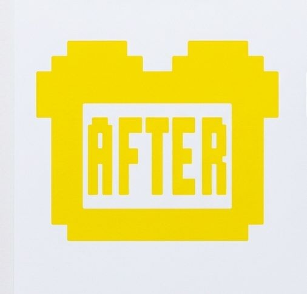

AfterToast: Why You Can't Buy Grape Ice Cream


On 2/19/2014 we wrote a FICTIONAL story about why there is no grape ice cream.
Why You Can't Buy Grape Ice Cream
The rumor spread and many sites plagiarized the content for their own without any disclaimer. It became so widespread Snopes even did a fact check on it.
https://www.snopes.com/fact-check/grape-ice-cream/
In this episode of AfterToast, we first hear the original EMToast story “Why You Can't Buy Grape Ice Cream.”
Then the hosts dig into the bizarre history, the increasingly questionable science, and the absolutely insane chain of events supposedly responsible for the disappearance of grape ice cream.
EMToast is a satirical fiction website. The events described in the original story are fictional.
AfterToast is where we take an EMToast story and talk about what the hell just happened.
Original story: Why You Can't Buy Grape Ice Cream
EMToast: https://emtoa.st/
Related posts

AfterToast: The Trouble With George’s Face
George W. Bush wants to win back the respect of the American people. His solution? A military-style vest, enormous baby…

AfterToast: Paris Hilton Arrested for Making Out With a Freaking Monkey?
EMToast reported that Paris Hilton was arrested after admitting to making out with a monkey. According to the story, an…


AfterToast: The Human Embodiment of Helvetica
The assignment sounded simple: find the human embodiment of Helvetica. In this episode of AfterToast, we first hear the original…